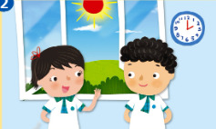
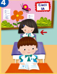
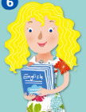

📚 Book 1A Unit 1 Vocabulary
編程設計：伍子謙老師
⚠️ 瀏覽器兼容性提示
您的瀏覽器可能不完全支持語音功能。建議使用 Chrome 或 Edge 瀏覽器以獲得最佳體驗。
您的瀏覽器可能不完全支持語音功能。建議使用 Chrome 或 Edge 瀏覽器以獲得最佳體驗。
1

Good morning
/ɡʊd ˈmɔː.nɪŋ/
早上好
Good
[1]
morn
[2]
ing
[3]
2

Good afternoon
/ɡʊd ɑːf.təˈnuːn/
下午好
Good
[1]
aft
[2]
ern
[3]
oon
[4]
3
Goodbye
/ɡʊdˈbaɪ/
再見
Good
[1]
bye
[2]
4

a classmate
/ə ˈklɑːs.meɪt/
同學
a
[1]
class
[2]
mate
[3]
5
a monitor
/ə ˈmɒn.ɪ.tər/
班長（男）
a
[1]
mon
[2]
i
[3]
tor
[4]
6

a teacher
/ə ˈtiː.tər/
老師
a
[1]
teach
[2]
er
[3]
7
a monitress
/ə ˈmɒn.ɪ.trəs/
班長（女）
a
[1]
mon
[2]
i
[3]
tress
[4]
🎤 Pronunciation Practice
使用說明：
- 使用 Chrome 或 Edge 瀏覽器（需要 HTTPS 或 localhost）
- 點擊詞彙卡片，聽標準發音
- 點擊"開始錄音"，大聲朗讀
- 點擊"停止錄音"，查看詳細評分和改進建議
請先選擇一個詞彙
🎙️ 正在錄音中...
請大聲朗讀：
0
🎯 準確度 (Accuracy)
0
💬 流利度 (Fluency)
0
✅ 完整度 (Completeness)
0
📝 識別結果
-